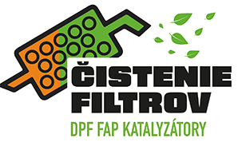
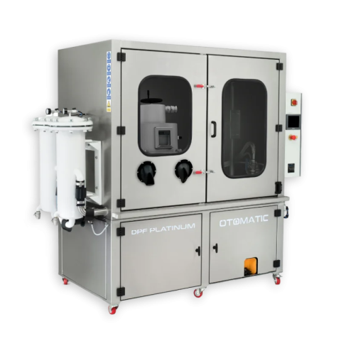

Objednať saLemešany · DPF · FAP · katalyzátory
Profesionálne čistenie DPF filtrov hydrodynamickou technológiou. Obnova továrenských hodnôt až na 98 %, montáž zabezpečíme priamo u nás.

Výhody čistenia DPF
Šetrný spôsob k Vášmu filtru aj k Vašej peňaženke. Ignorovanie kontrolky DPF môže viesť až k poškodeniu motora.
Technológia čistenia
Čistíme strojom DPF Platinum Otomatic. Využíva hydrodynamickú silu prúdu vody a stlačený vzduch, a celý proces je automatizovaný, takže je rýchlejší aj dôkladnejší.
Posúdenie stavu filtra.
Uvoľnenie usadenín.
Turbulentný prúd vody a vzduchu.
Filter pripravený na montáž.
Čo je DPF?
DPF je filter pevných častíc, súčasť výfuku väčšiny moderných dieselových vozidiel od osobných áut po kamióny a ťažké stroje. Časom sa upcháva.
Systém hlási, že je filter blízko svojej kapacity.
Auto ťahá slabšie alebo zle zrýchľuje.
Upchatý filter vedie k neefektívnemu spaľovaniu.
Nezvyčajné zvuky môžu znamenať preťažený filter.
Pri kratších jazdách sa filter nestihne regenerovať.
Cenník
Cena pre osobné vozidlá. Viac informácií Vám radi poskytneme.
Cena pre dodávky. Presnú cenu upresníme podľa vozidla.
Cenu pre Vaše vozidlo Vám radi upresníme.
Kontakt
Špecializujeme sa na čistenie a údržbu DPF filtrov pre všetky typy vozidiel. Napíšte nám, poradíme a ponúkneme riešenie na mieru.